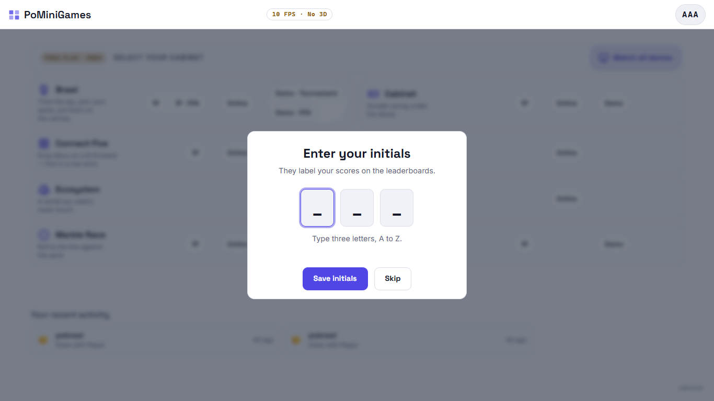

1. Home Shell — Global AI, TTS, Embeddings & Tone.js Runtime Boot

1
2
3
1
index.html registers the lazy tone import-map entry (loaded only when music volume > 0) alongside Three.js r186 WebGPU/TSL, Rapier, and Transformers.js.2
Live DOM check confirmed
window.PoLocalTts === object (Kokoro-82M Web Worker + IndexedDB cache) and window.PoEmbeddings === object (all-MiniLM-L6-v2 cosine matcher), both 100% inert until opted in.3
speechBus.js routes spoken cues through PoLocalTts when enabled, and tensionMixer.js drives createToneMusic() stems on the shared audioBus.js AudioContext.